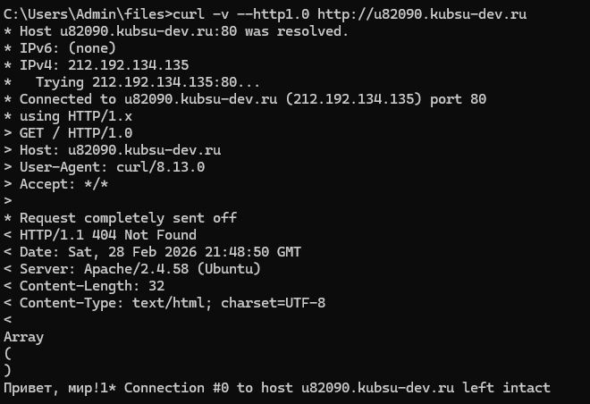
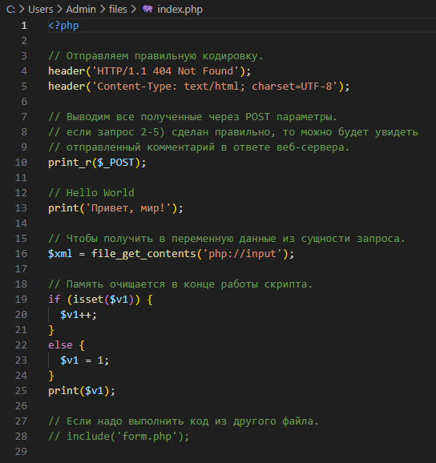
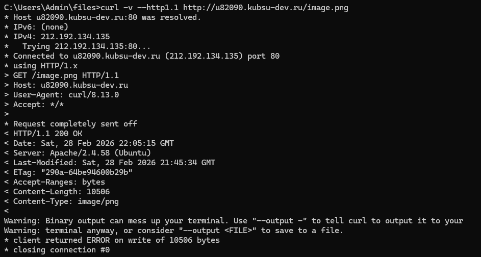
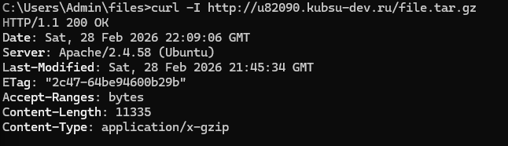
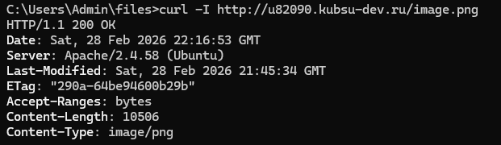
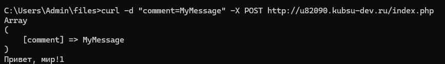
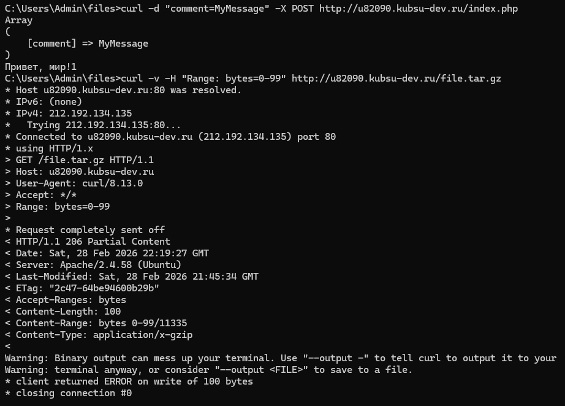
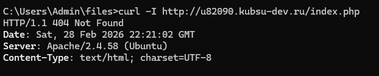

-
Получить главную страницу методом GET в протоколе HTTP 1.0. После *Request completely sent off получаем текст записанный в файле php, фраза 404 not found является частью строк, а не ошибкой.


-
Получить внутреннюю страницу методом GET в протоколе HTTP 1.1. Здесь получаем внутренний файл каталога files - image.png (GET /image.png HTTP/1.1)

-
Определить размер файла file.tar.gz, не скачивая его. Размер файла 11335 байт (строки Accept-Ranges и Content-Length)

-
Определить медиатип ресурса /image.png. (строка Content-type, здесь медиатип image/png)

-
Отправить комментарий на сервер по адресу /index.php.

-
Получить первые 100 байт файла /file.tar.gz. (по строке, отвечающей за величину файла (Content-Length и Accept-Ranges) можем убедиться в том, что получили именно 100 байтов.)

-
Определить кодировку ресурса /index.php. (charset=UTF-8)
